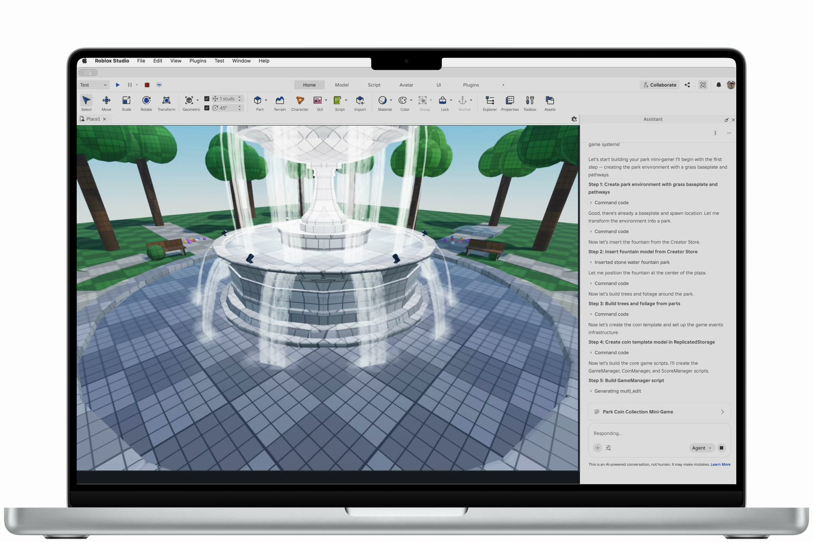
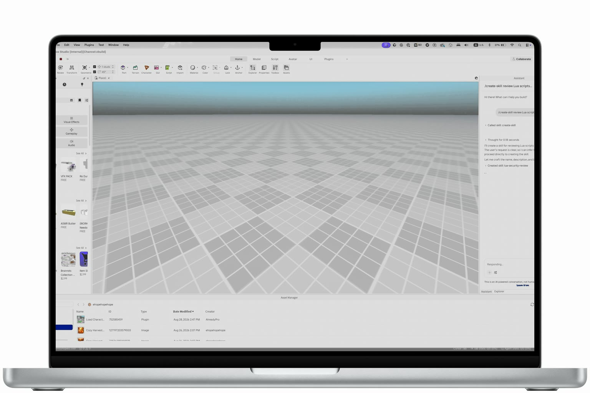
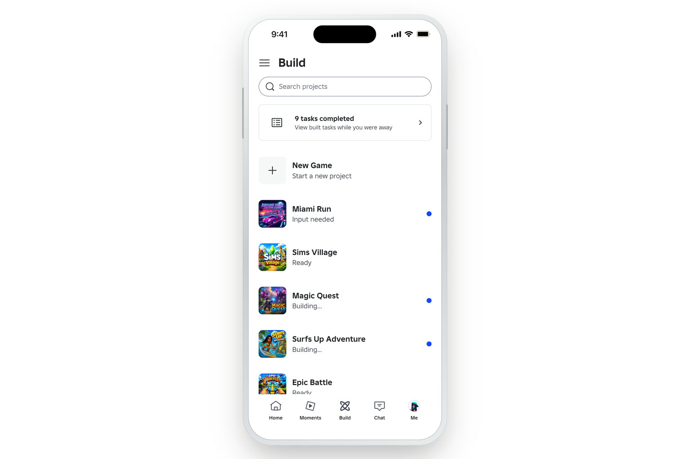
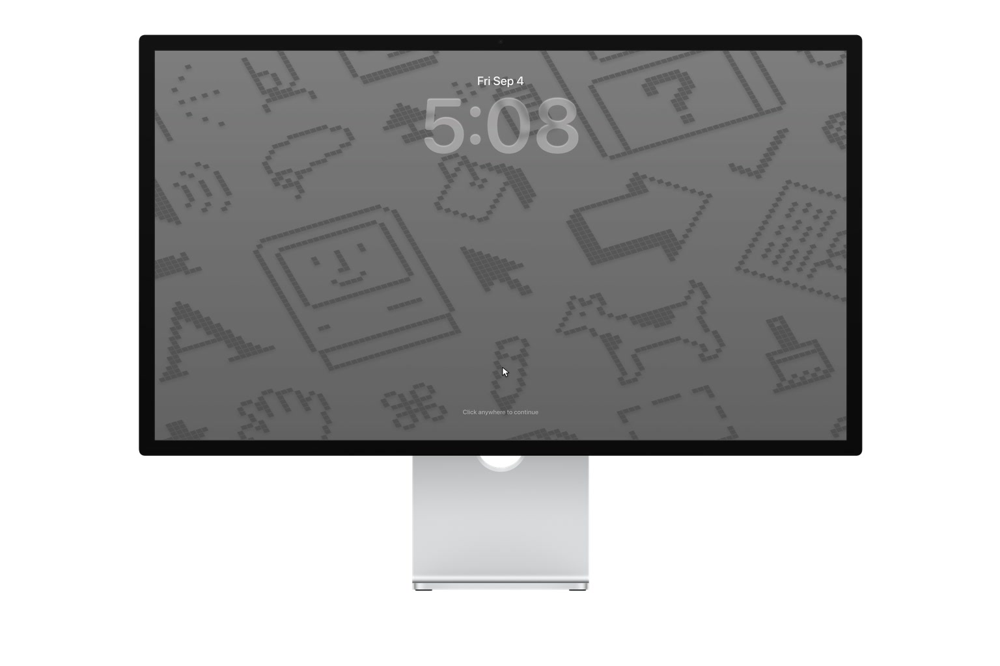

Planning Mode
Giving Studio's AI Assistant a place to plan with the creator before it acts, so intent gets reviewed before anything is built.
Case study soonProduct designer at Roblox, working on one prompt to a playable world, and an assistant in Studio that actually knows how creators work.

Giving Studio's AI Assistant a place to plan with the creator before it acts, so intent gets reviewed before anything is built.
Case study soon
A system for teaching the Assistant new abilities, and the conventions that keep it legible to creators.
Case study soon
The new way to make games on Roblox. One prompt, and a player becomes a creator.
Private, ask me about itOne-click, non-destructive updates for imported 3D content.
Clear, scalable controls for who can use and manage assets across experiences, groups, and teams.
Case study soon
A living desktop of notes, tools, and experiments: a personal operating system for how I think and work.